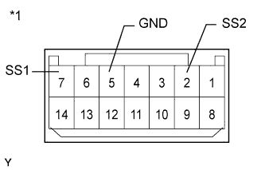

ВЫКЛЮЧАТЕЛЬ ЗАЖИГАНИЯ (для моделей с правосторонним рулевым управлением) > ПРОВЕРКА |
| 1. ПРОВЕРЬТЕ ВЫКЛЮЧАТЕЛЬ ЗАЖИГАНИЯ |
|  |
Измерьте сопротивление в соответствии со значениями, приведенными в таблице ниже.
| Контакты для подключения диагностического прибора | Положение переключателя | Заданные условия |
| 7 (SS1) - 5 (GND) | Нажат | Менее 1 Ом |
| 2 (SS2) - 5 (GND) | Нажат | Менее 1 Ом |
| 7 (SS1) - 5 (GND) | Не нажат | 10 кОм или более |
| 2 (SS2) - 5 (GND) | Не нажат | 10 кОм или более |
| *1 | Устройство с отсоединенным жгутом проводов (выключатель зажигания) |
Подайте напряжение аккумуляторной батареи на контакты выключателя и проверьте, светится ли индикатор выключателя.
| Условия измерений | Заданные условия |
| Положительный вывод аккумуляторной батареи (+) → контакт 11 (SWIL) Отрицательный (-) вывод аккумуляторной батареи → контакт 5 (GND) | Светится (подсветка буквенных обозначений) |
| Положительный вывод аккумуляторной батареи (+) → контакт 12 (INDS) Отрицательный (-) вывод аккумуляторной батареи → контакт 5 (GND) | Светится (зеленым светом) |
| Положительный вывод аккумуляторной батареи (+) → контакт 13 (INDW) Отрицательный (-) вывод аккумуляторной батареи → контакт 5 (GND) | Светится (желтым светом) |